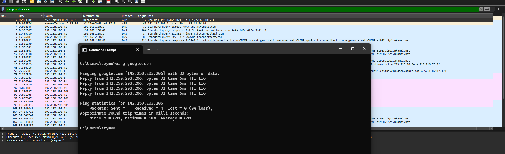

Assignment 1 - Practical Part
I. Ping command

ARP - Adress Resolution Protocol corresponds to Data Link layer. It asks router it's mac addressDNS - Domain Name System corresponds to Application Layer. It translates google.com into 142.250.203.206 ICMP - Interner Control Message Protocol corresponds to Network layer. Echo Request to 142.250.203.206 and waits for an Echo Reply
II. Utilizing the SCP

TCP - Transport Layer Protocol - transport layer for scp
III. Accessing webpage it.p.lodz.pl


Filters: dns.qry.name contains "it.p.lodz.pl" or tcp.port == 443 or tls or quic
IV. Accessing webpage studife.it.p.lodz.pl

Filters: dns.qry.name contains "studife.it.p.lodz.pl" or tcp.port == 80 or http